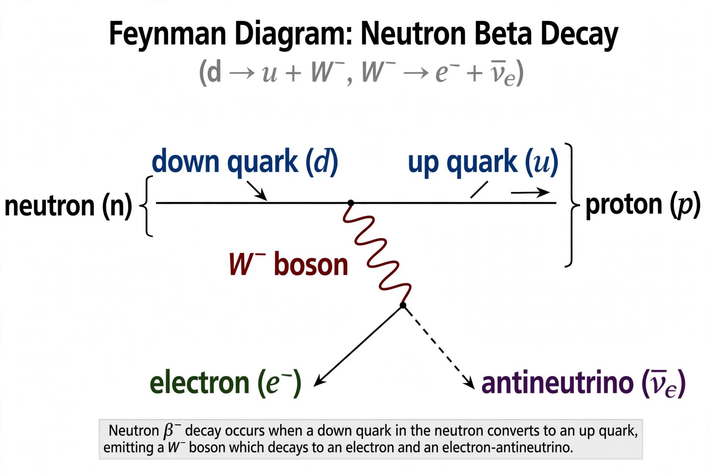

Electroweak interaction
| Forces unified | Electromagnetism + weak interaction |
|---|---|
| Key figures | Sheldon Glashow, Abdus Salam, Steven Weinberg |
| Mediators | Photon, W and Z bosons |
| Recognition | Nobel Prize in Physics 1979 |

[Image: Feynman diagram of beta decay mediated by a W boson]In particle physics, the electroweak interaction is the unified description of two of the four known fundamental interactions of nature: electromagnetism and the weak interaction. Although these two forces appear very different at everyday low energies, the theory models them as two different aspects of the same force. Above the unification energy, around 246 GeV (equivalently at temperatures of order 10¹⁵ K), they merge into a single combined electroweak force.
The mathematical formulation — a gauge theory with symmetry group SU(2) × U(1) — was developed by Sheldon Glashow (1961) and completed through the work of Abdus Salam and Steven Weinberg (1967–68), who incorporated the Higgs mechanism to give the weak bosons mass. The three shared the 1979 Nobel Prize in Physics. The theory predicted weak neutral currents (observed in 1973 at CERN) and the masses of the W and Z bosons (discovered at CERN in 1983).
Formulation
The electroweak theory couples left-handed fermions to an SU(2) triplet of W bosons and all fermions to a U(1) field. Spontaneous symmetry breaking by the Higgs field mixes two of the gauge fields to produce the massless photon and the massive Z⁰, while the W± acquire mass directly; the mixing is parameterised by the weak mixing angle θ_W (sin²θ_W ≈ 0.23). Because the unbroken symmetry remaining is ordinary electromagnetism, electric charge emerges as a combination of weak isospin and hypercharge: Q = T₃ + Y/2.
Weak interaction phenomenology
The weak force is responsible for beta decay, nuclear fusion reactions that power the Sun (pp chain), and flavour change among quarks (CKM matrix) and neutrinos (PMNS matrix, Neutrino oscillations). It is the only fundamental force that violates parity — discovered by Chien-Shiung Wu in 1957 — and the only one that changes particle flavour. Its carriers' large masses (W: 80.4 GeV, Z: 91.2 GeV) make it very short-ranged, hence 'weak' at low energies despite a coupling comparable to electromagnetism's.